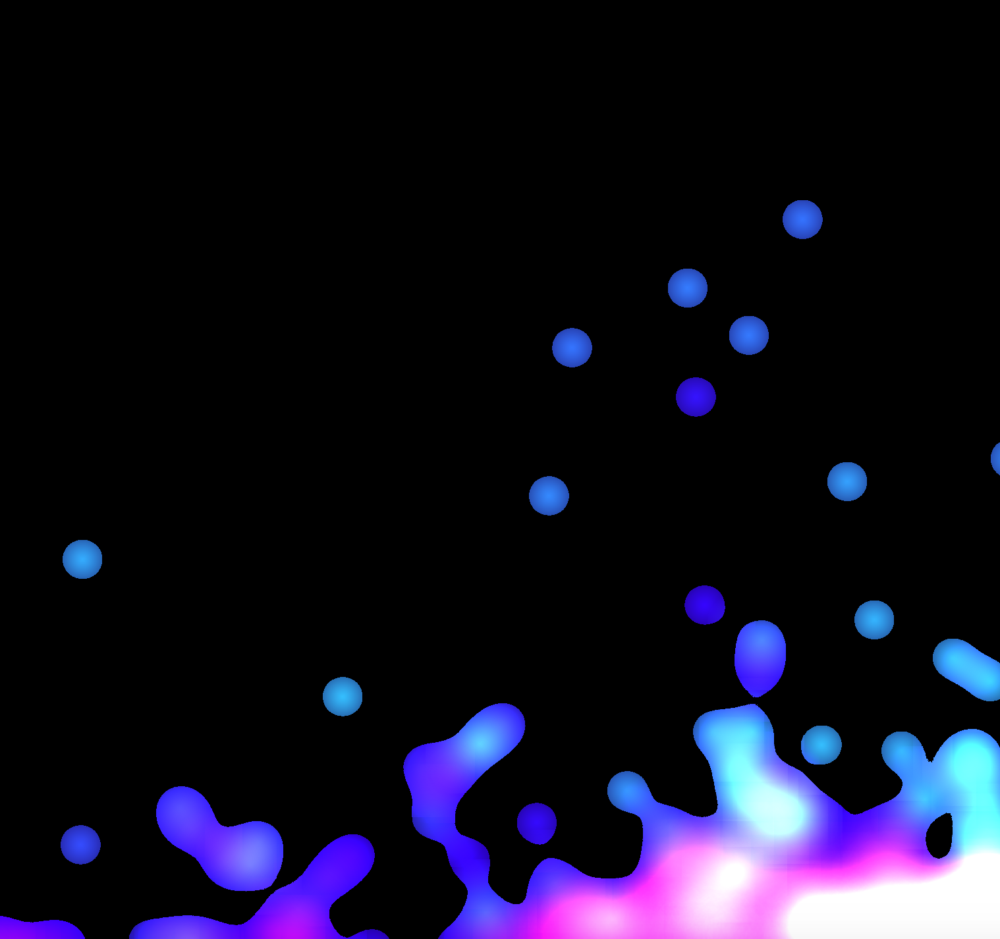
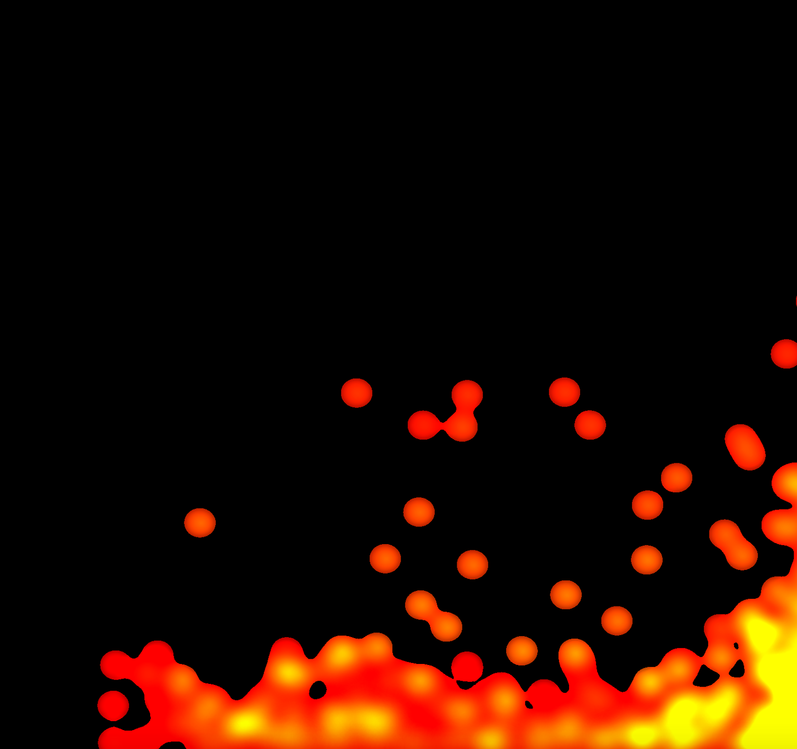
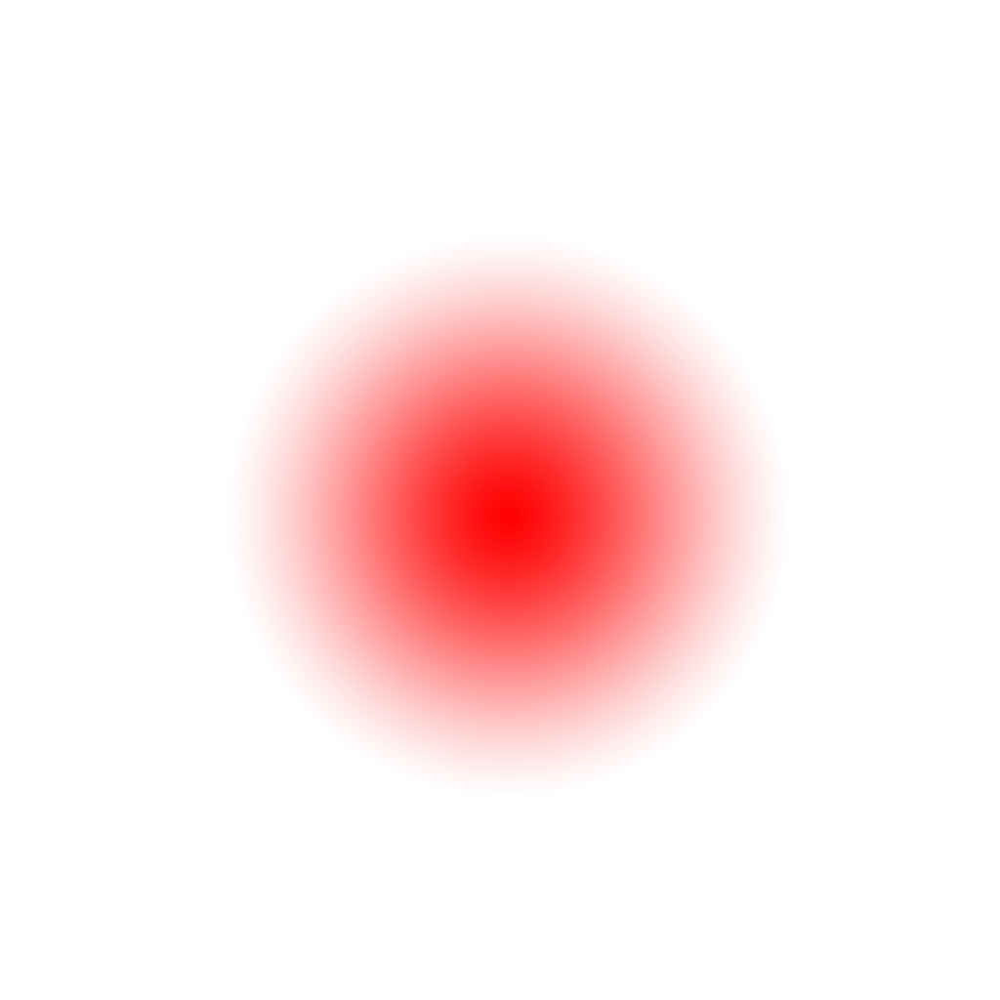
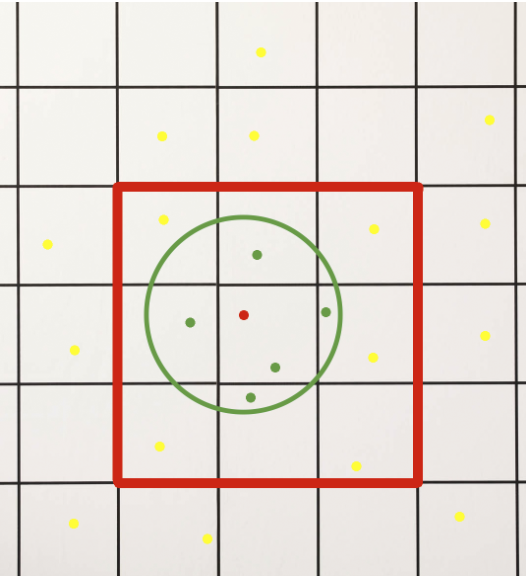

|

|
We divided our project into three separate modules. The physics module computes locations of each particles in float precision. In calculation of forces exert on each particle, we also include external force generated from computer vision module, which tracks head and hand positions. Finally, at every frame, updated position of each particle is sent to rendering for visualization.
Our first solution at a metaballs shader used only a fragment shader. We passed in the entire float array of positions to our shader, and for each pixel on the screen, ran through all of the particle positions and found the closest matching particle. This resulted in extremely slow rendering so we changed our strategy.
Our second and final solution involved rendering the particles by using GPU billboard instancing. We first create a simple plane VAO with four vertices, which we treat as the geometry to be instanced. During each render call, we bind the VAO, then bind the new VBO to our vertex shader, with all the particle positions in it. We also bind a second new VBO to our vertex shader with all the particle colors in it. Next, we call glDrawElementsInstanced, which, given a little meta-data specified during the VBO instantiation, renders each particle in a different position with a different color. The fragment shader for each particle simply takes in a texture and renders it normally. To achieve thresholding on the alphas (which results in the nice blobby look we were going for), before the instance render call, we bind a texture to a new framebuffer, and bind this new framebuffer. The particles now render to this new texture. Afterwards, we bind the default framebuffer, and render a plane on top of the screen using the texture that we created from the first render call. In the fragment shader for this plane, it simply takes in a texture, and outputs the color at that texture if the alpha is greater than .5. Voila, metaballs. This strategy also allows some control over the metaball look, varying the falloffs and colors results in different behaviours shown below.
|
|

|
|
|

|
Physics of the fluid is approximated using particle based simulation based on incompressible Navier-Stokes equations[3]. We are using a simple simulation called Smoothed Particle Hydrodynamics (SPH) [5]. To start, we create a finite amount of particles, with each particle containing its position, velocity, density, pressure as well as the force exerted on it. Each particle is initialized at a location with certain random minor variables. Their velocity and force are set to be zero. At every frame, three sequential calculations are performed on each particle.
|  |
Figure 1: In this example, red dot is our query point, and red square includes the 9 grids that its nearest neighbors can possibly in and considered, with each grid side length equal to the search radius. Green circle has center of query point and radius same as search radius, and every point within green circle as considered actual neighbors, whereas every yellow dots are not.
Our design methodology was to seek out the most intuitive interaction possible with the fluid through OpenCV input. After some observation and questions to individuals, we realized the first response a person would have was to try run their hands through the fluid. Based on this, we started researching basic hand tracking algorithms.
The first iteration we went through involved HSV conversion of our video stream, and thresholding based on the values of human skin color to identify the hand. From there, you can track ‘hands’ using contour extraction and some basic area heuristics. Unfortunately, the tuning of these parameters would change depending on lighting and the person’s skin color in question, so we abandoned this strategy.
Next we began experimenting with optical flow, [8] an algorithm which tracks pixel motion over time. This algorithm generates a full grid of motion values, which we thought could possibly work well as form of interaction with a grid based fluid simulation. After some experimentation, we realized that optical flow works better on large gradients, and would only generate flows around the edges of objects. Furthermore, it would generate stronger motion fields around the hair and clothing of the person trying to interact with the simulation, rather than their moving hand. We put this strategy on hold to pursue more robust options.
Our third iteration involved a naive face tracker, which uses a HAAR cascade to track faces. We were surprised at the stability and robustness of this algorithm, and its ability to support multiple faces at once. It rarely drops faces once detected, which allows for computation of motion vectors between frames. This stability was what we were searching for, it turns out stable, predictable behaviour was the key to defining a good interaction scheme with the fluid.
We made a fourth attempt to get hand interaction working. Due to our success with the face tracker, we experimented with some HSV auto-thresholding based on the average color of the faces it detected. This attempt was a combination of our first and third strategies, and we hoped this auto-thresholding could allow for robust hand tracking. Unfortunately, it did not, hands against variable backgrounds were often lost, leading to unpredictable behaviour, which ruined the immersion of the interaction.
Our final and fifth attempt came after implementing the jelly-like final fluid: we realized that averaging the total optical flow over the image gave an incredibly accurate and intuitive interaction, solving our interaction problems within our design constraints. The result was performant, intuitive, and was highly entertaining to use. We then added in visual feedback for the speed of particles, coloring them based on velocity. [7].
While our current demo successfully illustrates functionality of the project and interactiveness, there are still quite a lot parts to be improved. First, the appearance of the liquid still does not look realistic. The way we implemented shader through metaball is rather a hack and does not accurately reflect physical property of the liquid. To further improve that, more research need to be done on shader to calculate color of the liquid particle based on its density as well as its speed. Second, the way we implemented human computer interaction is also suboptimal. In the original proposal, we were planning to get an accurate hand tracking, and allow user to use their hands to lift certain amount of water as if it’s real. This is also one of the first reaction that we found people tend to do during demo. We resorted to average optical flow due to unreliability of the hand tracking based on pure RGB data. Although there are current state of art approach, which detect user’s skin color and, based on that, segment hand from the scene. It is still proven to be unreliable and slow in computation. Instead, using RGB-D data from depth sensor should improve the result. Another alternative is based on deep learning. Utilizing OpenPose [6] published by CMU, it can achieve relatively accurate estimation purely based on RGB data, although current implementation might be too slow for real time performance.